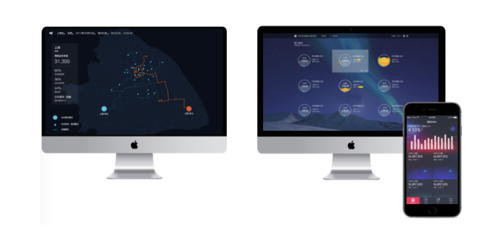
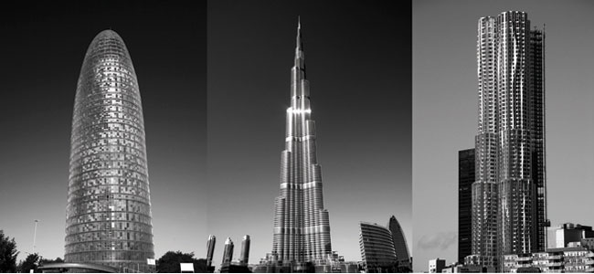

ihealth - an app take care of you
iHealth is a mobile app that take care of your health journey. It provides three functions - health care plan, community self-help and recommendation material based on ML.

Lucid Interactive Product
Fluid is an interactive installation that using Arduino to control the effects of lamp light and using the infrared detector to control its power switch.

TxDoT Usability Research
It is a research project that helps TXDOT to improve their service, increase their influence and build their image.

UXPA Second Prize Project
Waiting is a mobile app design and system service design. It uses waiting system to maximize customer waiting benefits.

Data Visualization Product
JD MBA is a long-lasting project I did at JD.com. Its aim was to collect user data from the JD mobile app like the UV, PV...

Insurance Software - eBaoCloud
eBaoCloud is a family of products based on 4G insurance technologies (cloud native and microservices architecture based). eBaoCloud current offerings include both PaaS (API) and SaaS (APP).

Architecture Criticism
A range of current architectural investigations, as manifest in specific built work and texts. It begins with a set of contemporary buildings and texts, and aims at generating a critical dialogue.
Research - An Analysis of Print Book and E-book Preference
A research on preferences of print book or E-book. We used Mann-Whitney U test to investigate whether it exists the relationship between online questionnaire and printed questionnaire towards preference.